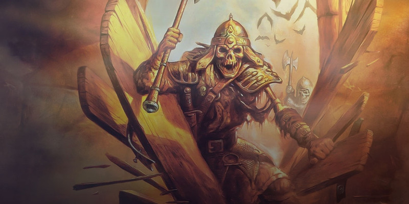

Points d'expérience
Lorsque nous avons conçu la cinquième édition de Donjons & Dragons, nous parlions des trois piliers du jeu : exploration, interaction sociale et combat. En parlant des interactions sociales et de l'exploration comme des aspects fondamentaux de D&D, nous voulions faire en sorte que l'on pense toujours à autre chose qu'au combat lors de la conception le jeu. Faire des combats simples a mobilisé notre attention en termes de règles et d'équilibre du jeu, mais les deux autres éléments sont aussi importants pour faire de chaque session de jeu un moment unique et excitant. ;Cet article présente une alternative pour gagner de l'expérience (PX) en se focalisant sur les trois piliers. C'est aussi une façon simple de suivre les PX en incorporant des éléments inspirés du système des jalons pour gagner de l'expérience.
Cette variante des règles gère les PX différemment, la valeur des points d'expérience étant différente de celle du jeu standard. Cela devient mathématiquement plus simple, les personnages gagnant un niveau tous les 100 PX. Les gains sont relatifs au niveau du personnage toutefois, donc le rythme auquel les personnages gagnent des niveaux reste tout le temps le même, alors qu'avec le système par défaut, les avancements sont plus rapides à certains niveaux.
Ces règles utilisent une base de 100 PX car cela facilite la gestion des gains d'expérience. Par exemple, gagner 20 PX vous rapporte 20% d'un niveau. Pour le MD et les joueurs, l'intention est de faciliter la compréhension des risques et des récompenses lors d'une aventure. Gardez bien à l'esprit que le rythme d'avancement de ces règles est différent de celui des règles principales, même si ce changement est contrebalancé par le fait que le MD obtient plus de contrôle sur la progression.
Gagner des niveaux
Avec ce système, vous gagnez un niveau chaque fois que vous accumulez 100 PX. Quand vous atteignez ce seuil, vous augmentez le niveau de votre personnage et réduisez votre total de PX de 100.
Partager les PX
Avec ce système, les PX ne sont plus divisés entre les membres du groupe. La récompense pour une aventure est la même pour tous. Si tuer un monstre rapporte 10 PX, chaque membre du groupe gagne 10 PX. Toutefois, si le groupe est exceptionnellement grand, cela rendrait les PX trop faciles à gagner, alors si plus de six membres d'un groupe sont éligibles pour gagner des PX (en comptant PJ et PNJ), diviser les gains d'expériences par deux.
Gagner des PX
Vous gagnez de l'expérience à travers les activités représentées par chacun des trois piliers de l'aventure : exploration, interaction sociale et combat. Chaque type de jeu rapporte des PX différemment.
Exploration
Vous gagnez des PX en retrouvant des objets magiques perdus, en découvrant des salles aux trésors et en explorant des sites et des lieux importants abandonnés. Votre personnage peut gagner des points d'expérience en retrouvant une puissante arme dans le trésor d'un dragon, en volant un diamant à un baron mauvais ou en retrouvant la localisation d'un temple du mal perdu. La valeur de la localisation ou de l'objet comparée à votre niveau détermine sa valeur en PX. Trouver un trésor ou explorer un lieu approprié à votre échelon rapporte 10 PX, avec un bonus de 10 PX pour chaque échelon au-delà de votre échelon actuel. Vous ne gagnez pas de PX pour explorer des lieux en-dessous de votre échelon.
Objets. Les trésors et les objets magiques sont assignés à des niveaux comme suit :
- Échelon 1 : Un seul objet d'une valeur de 100 po ou plus, ou un objet magique rare non-consommable.
- Échelon 2 : Un seul objet d'une valeur de 1 000 po ou plus, ou un objet magique très rare non-consommable.
- Échelon 3 : Un seul objet d'une valeur de 5 000 po ou plus, ou un objet magique légendaire non-consommable.
- Échelon 4 : Un seul objet d'une valeur de 50 000 po ou plus, ou un artéfact.
Lieux. Des sites oubliés ne sont pas séparés en échelon par une règle simple et rapide. L'échelon d'une localisation dépend de son importance dans votre campagne. Vous pouvez mesurer la découverte d'un lieu perdu ou la libération d'un site des mains d'un méchant par l'impact de cette action.
- Échelon 1 : Un lieu important pour une petite ville ou un village.
- Échelon 2 : Un lieu vital pour un royaume.
- Échelon 3 : Un lieu important au niveau du monde.
- Échelon 4 : Un lieu important au niveau du cosmos.
Interaction sociale
Vous gagnez des points d'expérience pour tourner des PNJ en alliés, en les rapprochant de votre cause, ou en les séparant de la cause de vos ennemis. Vous gagnez 10 PX quand un PNJ de l'échelon approprié retourne sa veste, plus 10 PX pour chaque échelon au-delà de votre échelon actuel. Vous gagnez 5 PX en affectant un PNJ d'un échelon inférieur au votre, mais vous ne gagnez aucun PX pour des PNJ d'un échelon encore plus bas. Les échelons des PNJ sont définis comme suit :
- Échelon 1 : Un PNJ avec de l'influence sur une petite ville ou un village, ou équivalent.
- Échelon 2 : Un PNJ avec de l'influence sur une cité, ou équivalent.
- Échelon 3 : Un PNJ avec de l'influence sur un royaume ou un continent, ou équivalent.
- Échelon 4 : Un PNJ (incluant un dieu) avec une influence au niveau du cosmos.
Combat
Vous gagnez des PX en éliminant des monstres en combat, en les tuant ou en les laissant dans un état tel qu'ils ne causeront plus d'ennuis. Par exemple, vous pouvez forcer un démon à retourner dans les Abysses ou emprisonner un mort-vivant dans une tombe scellée. Les PX que vous gagnez pour vous défaire d'un monstre dépendent de la puissance du monstre (FP) par rapport à votre niveau. Dans la plus part des cas, vous gagnez 5 PX par monstre éliminé. Cette récompense augmente à 15 PX si la puissance du monstre est égale à deux fois votre niveau ou plus. Si sa puissance est égale à la moitié de votre niveau ou moins, la récompense tombe à 2 PX.
Se focaliser sur les piliers
En tant que MD, si votre campagne se focalise sur seulement un ou deux des trois piliers, vous récompenserez seulement les PX sur ces piliers. Mais si vous éliminez un pilier, vous devrez vous assurer de donner à vos joueurs toutes les opportunités de réaliser les autres piliers. Vous pouvez aussi augmenter les PX pour les piliers que vous utilisez. Augmenter les récompenses de deux autres piliers de 50 % est une bonne solution pour compenser la perte d'un seul pilier. Si vous utilisez un seul pilier, triplez les récompenses.

Écrit par Mike Mearls, traduit par glooping et blueace